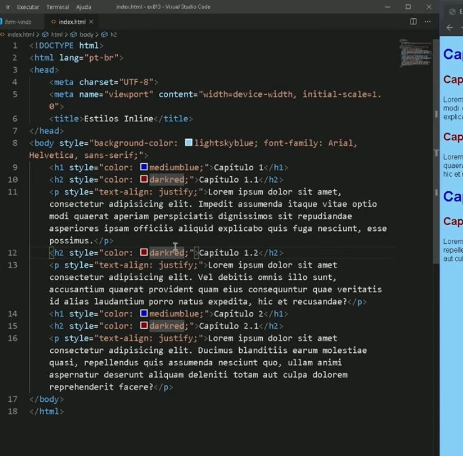

O CSS inline é uma variação de desenvovimento como todas a outras, seu diferêncial é a forma como os comandos são inseridos, juntos as tags de HTML (semântica), com isso misturando semâmtica e estilo.
Esta não é uma forma muito comum de se desenvolver um site e nem muito util na verdade, por possuir mais contras que prós e muitas limitações, além de que polui e muito o código, oque não é nada bom.
Outro grande problema no inline é a falta de versatilidade, caso fosse colorir uma linha você teria que fazer a mesma coisa manualmente em todas as outras. Caso fosse ser necessário uma alteração muito grande no site você teria que fazer a alteração manualmente em todas as linhas.
Não vamos utilizar o modelo inline por tanto não espera grandes registros.
A página principal está sendo deseenvolvida inline, caso queira retornar a mesma, clique aqui.